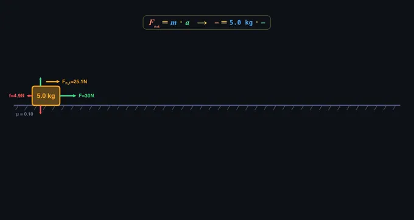

Newton’s Laws of Motion
1st Law (Inertia) • 2nd Law (F = ma) • 3rd Law (Action & Reaction) — Simulate • Explore • Practice • Quiz
Display Controls
Σ Live equations — values substituted from current state
💡 What-if coach — insights from current values
📈 Time history — position, velocity, acceleration
1 Overview
This Newton’s second law simulator is a free, interactive tool that brings all three of Newton’s Laws of Motion to life. Whether you are studying F = ma, exploring inertia, or investigating action-reaction pairs, the simulator provides real-time animations, free body diagrams, and classical KaTeX-rendered equations that update instantly as you adjust parameters. Built for engineering education and university-level physics courses, it requires no downloads or plugins — just open it in any modern browser.
The tool covers seven distinct physics scenarios: 1st law on five surfaces, 2nd law on flat / inclined / Atwood pulley / connected-blocks, and 3rd law as cannon / rocket / ice-skaters. Every calculation uses SI units (newtons, kilograms, metres per second squared) so results map directly to textbook problems and exam questions.
2 Setting the Scene
When you first load the page, the simulator opens in Simulate mode with Newton’s Second Law selected by default. You will see a block on a surface with force arrows drawn to scale and the classical equation F = m · a overlaid in colour-coded notation. The readout cards below the canvas show Applied Force, Friction, Net Force, Acceleration, Mass, Weight, Normal Force, and the coefficient of friction μ.
Use the Mode pills at the top to switch between Simulate, Explore, Practice, and Quiz. Each mode serves a different learning purpose. Start with Simulate to build intuition, move to Explore for deeper theory, then test yourself with Practice and Quiz.
All inputs are paired: drag the slider for quick exploration, or type an exact value into the numeric stepper beside it. As soon as you change any input, the canvas animation, the free body diagram, the live equations panel, and every readout card update instantly.
3 Running the Demo
Simulate mode is the heart of this Newton’s Laws simulator. Select which law to study using the law tabs (1st Law, 2nd Law, 3rd Law). Each law has its own set of sliders, scenarios, and controls.
1st Law (Inertia): Set an initial velocity, mass, and choose a surface — Ice (μ=0), Wood, Road, Sand, or Rubber. Press “Push” to launch the block and observe how friction decelerates it. On a frictionless surface the block continues at constant velocity forever, demonstrating inertia.
2nd Law (F = ma): Pick a scenario: Flat Surface, Inclined Plane, Atwood Pulley, or Connected Blocks. Adjust applied force, mass, and friction coefficient. The interactive free body diagram shows all force vectors drawn to scale. Press “Push” to animate — the block slides along the slope (on incline), or hangs from the pulley (Atwood), while position markers drop at equal time intervals and a live time-history graph plots x(t), v(t), and a(t).
3rd Law (Action-Reaction): Three scenarios: Cannon & Ball, Rocket Launch, and Ice Skaters. Each demonstrates that the same internal force acts on both bodies equally but produces vastly different accelerations because a = F/m. Press “Fire” / “Push” to launch.
4 Action Bar & Replay Controls
The action bar below the canvas gives you full playback control:
- Push / Fire — runs the simulation forward from the current state.
- Pause — freezes the simulation; press Push to resume.
- Replay — resets positions and replays from t = 0 using the current inputs.
- Reset — clears all history, sliders untouched.
- Speed pills (0.25× / 0.5× / 1× / 2×) — classroom-friendly default is 0.5× for clear inspection. Speed up for repeated runs.
- Undo / Redo — revert slider or toggle changes with Ctrl+Z / Ctrl+Shift+Z (Cmd on Mac).
- CSV / PNG — export time-series data (t, x, v, a) as CSV or snapshot the canvas as PNG with watermark.
- Sound — toggle Web Audio sound effects (cannon boom, push thud).
- SI ↔ Imperial — switch unit display between metric and US customary.
5 Canvas Feature Toggles
Above the action bar are six checkboxes that let you focus the canvas on specific pedagogical concepts:
- Show FBD — the free body diagram (weight, normal, applied, friction arrows).
- Show Vectors — live velocity / acceleration arrows following the block during animation.
- Show Equation — classical color-coded F = m · a equation overlay on the canvas; values roll from 0 during the animation.
- Show Trail — coloured trajectory trace of the moving body.
- Time Markers — dots at equal time intervals (wider gaps = more acceleration).
- Grid — background measurement grid in metres.
All toggles work with undo / redo so you can revert experiments quickly.
6 Learning Panels & Show Calculations
Below the readouts is a collapsible Learning Panels block with three cards:
- Live equations — the relevant formulas rendered in classical mathematical notation via KaTeX, with your current values substituted (for example: Fnet = F − μmg = 30 − 4.9 = 25.1 N).
- What-if coach — plain-English insights triggered by your current input combination (“Doubling the mass would halve the acceleration…”).
- Time history — multi-axis graph that plots v(t), x(t), a(t), or all three. Toggle with the axis pills.
For a complete textbook-style derivation, click the floating Show Calculations button on the canvas. A modal opens with a Given block plus 5–8 numbered steps in classical KaTeX notation showing every intermediate substitution.
7 Practice & Quiz
Practice mode generates unlimited random F = ma calculation problems across three difficulties (Easy, Medium, Hard). Each problem gives you a scenario, you enter your answer, and press Check. If you get it wrong, the full step-by-step solution is revealed.
Quiz mode presents 5 randomised multiple-choice and numeric questions per session, covering all three laws and the new scenarios. Your final score and a breakdown of correct and incorrect answers are shown at the end.
8 Keyboard Shortcuts
- Space — Push / Fire (run simulation)
- P — Pause / Resume
- R — Reset
- 1 / 2 / 3 — switch to 1st / 2nd / 3rd Law
- U — toggle SI ↔ Imperial units
- Ctrl+Z — Undo
- Ctrl+Shift+Z — Redo
- Right-click on canvas — context menu (copy readouts, export CSV/PNG, toggle features, reset)
- Drag horizontally on the canvas in 2nd-law mode — sets applied force live
9 Tips & Best Practices
- Start with presets before adjusting individual sliders — they illustrate key phenomena like static-vs-kinetic friction, frictionless incline acceleration, and Atwood machine balance.
- Compare scenarios: Run a 5 kg block on Ice, then switch surface to Sand, then again on a 30° incline. Use Replay at 0.5× speed to compare deceleration rates.
- Watch the equation roll on the canvas during animation — you can see F · t = m · v relationships emerge visually.
- Open Show Calculations after changing inputs to see the full SI derivation step by step.
- Use Practice mode for exam prep: Try to solve each problem on paper first, then check your answer.
Understanding Newton’s Laws of Motion — Free Interactive Simulator

Newton’s Laws of Motion form the foundation of classical mechanics and describe how objects move in response to forces. Published by Sir Isaac Newton in 1687, these three laws govern everything from everyday movement to spacecraft trajectories. This upgraded interactive simulator helps you visualise each law across seven scenarios — flat surface, incline, Atwood pulley, connected blocks, cannon, rocket, and ice-skaters — with classical KaTeX equations, replay controls, and CSV / PNG export.
The Three Laws Explained
Newton’s First Law (Inertia) states that an object at rest stays at rest, and an object in motion stays in motion at constant velocity, unless acted upon by a net external force. In the simulator, choose any of five surfaces (ice through rubber) to see how friction changes deceleration while the mass-independence of a = μg still holds.
Newton’s Second Law (F = ma) quantifies the relationship between force, mass, and acceleration: Fnet = ma. Doubling the force doubles the acceleration; doubling the mass halves it. The simulator extends this to four scenarios — flat surface, inclined plane (block now slides along the slope), Atwood machine (two masses on a pulley), and connected blocks pulled by a single force — each with the correct physics derivation shown live in KaTeX.
Newton’s Third Law (Action-Reaction) says that for every action there is an equal and opposite reaction. The simulator demonstrates this with three scenarios: a cannon firing a ball, a rocket expelling exhaust, and a pair of ice skaters pushing apart. In each case the same internal force acts on both bodies, but different masses produce different accelerations.
How to Use This Simulator
In Simulate mode, pick a law and a scenario, set parameters using the slider or the numeric stepper, then click Push (or press Space). Watch the block animate while the v-t graph and KaTeX live-equations panel update. Use the speed pills (0.25× recommended for inspection) and Replay to repeat the run. Right-click the canvas for export and toggle options. Switch to Explore for theory, Practice for random problems, and Quiz for a graded test.
The Three Laws, Each Paired with the Misconception They Replace
Newton’s laws are easy to recite and hard to internalise. Each one corrects a deeply ingrained piece of pre-scientific intuition. Knowing the wrong version makes the right one stick.
- First law — Inertia. A body persists in uniform motion (or rest) until acted on by a net external force.
Wrong intuition: “A moving thing must have a force pushing it.” This is Aristotle’s view, refuted by Galileo’s rolling ball: on a long enough smooth surface the ball never stops. A puck on an air-hockey table makes the same demonstration in every physics lab. The simulator’s frictionless preset is the modern version — remove friction and a single push runs forever. - Second law — F = ma. The acceleration of a body is proportional to the net force on it and inversely proportional to its mass.
Wrong intuition: “Force makes things move.” In reality, force makes things accelerate — change their velocity. A car cruising at constant 60 km/h has zero net force on it (engine thrust balances drag and rolling resistance). The simulator’s force-vs-acceleration plot is the cleanest way to see this; doubling F at constant m doubles a, not v. - Third law — Action and reaction. For every action force there is an equal and opposite reaction force on a different body.
Wrong intuition: “If they cancel, nothing moves.” They do not cancel because they act on different bodies. When you push a desk, your hand feels the desk pushing back; the desk does not move (other forces on it dominate) but the reaction force is genuine and exactly equal. Rocket thrust is the cleanest demonstration: exhaust pushed backward, rocket pushed forward, two halves of the same interaction.
Worked Example — A Block on a 25° Incline with Friction and an Applied Push
A 10 kg block sits on an incline of 25°. Coefficient of kinetic friction μk = 0.20. A force F = 40 N is applied up the slope, parallel to the surface. Will the block slide up, down, or stay put? If it moves, what is its acceleration? Take g = 9.81 m/s².
| Step | What you compute | Working | Result |
|---|---|---|---|
| 1 | Weight component along slope (downhill) | m·g·sinθ = 10 · 9.81 · sin25° | 41.5 N |
| 2 | Weight component normal to slope | N = m·g·cosθ = 10 · 9.81 · cos25° | 88.9 N |
| 3 | Maximum kinetic friction force | Ff = μk·N = 0.20 · 88.9 | 17.8 N |
| 4 | Net force needed up-slope to start moving up | m·g·sinθ + Ff (friction opposes motion if pushing up wins) | 59.3 N — applied F is less, so block does not slide up |
| 5 | Net force needed up-slope to prevent sliding down | m·g·sinθ − Ff | 23.7 N — applied F (40 N) exceeds this, so block does not slide down either |
| 6 | Conclusion | Block is in static equilibrium | a = 0 |
The lesson: friction is a range, not a single value. Up to ±17.8 N, static friction adjusts itself to whatever the equilibrium requires. The block only starts moving when the applied force exceeds the gravitational component plus the maximum friction. The simulator’s force-balance arrow display shows this range as a coloured band; when the net force vector exits the band, motion begins.
The Newton Time Line — Why It Took 2000 Years
The intuitive theory of motion from Aristotle to Newton is a 2000-year argument, not a single discovery:
- Aristotle (~350 BCE) — heavy bodies fall faster than light ones; motion needs a continuous mover; vacuum is impossible. Wrong on all three counts, but internally consistent and held for 19 centuries.
- Galileo (1564−1642) — experiment beats authority. Bodies of different mass fall at the same rate in vacuum; balls rolled on inclines accelerate uniformly; horizontal motion persists indefinitely on a frictionless surface (Galilean inertia).
- Descartes (1644) — formulated the first quantitative version of inertia in his Principia Philosophiae: a body left to itself moves in a straight line forever. Newton picked this up directly as his first law.
- Newton (1687) — Philosophiae Naturalis Principia Mathematica. The three laws plus universal gravitation explain projectile motion, planetary orbits, tides, and pendulums in one framework.
- Einstein (1905, 1915) — relativity replaces Newton at high speed and strong gravity. Newton’s laws survive as the v << c, weak-gravity limit, accurate to about one part in 1013 in everyday conditions.
When Newton’s Laws Fail — The Three Regimes
For most engineering practice, Newton is exact. There are three boundaries beyond which classical mechanics gives the wrong answer and a deeper theory is needed:
- High speed (v → c). Relativistic momentum p = γmv with γ = 1/√(1−v²/c²). At v = 0.1c the correction is 0.5%; at v = 0.5c it is 15%; GPS satellites moving at ~14,000 km/h need a 38 µs/day relativistic correction to keep position accurate.
- Strong gravity. Mercury’s perihelion precesses 43 arcseconds per century more than Newton predicts — the historical fingerprint that confirmed General Relativity in 1915. For terrestrial engineering, the deviation is undetectable.
- Small scale (atomic and below). Quantum mechanics replaces deterministic position and velocity with a probability amplitude. The classical “exact F = ma” gives way to expectation values via Ehrenfest’s theorem. The transition happens at scales where the de Broglie wavelength is comparable to the system size — nanometres for electrons.
- Non-inertial reference frames. Newton’s second law is valid only in inertial frames. In a rotating frame (a spinning carousel, the rotating Earth) you must add Coriolis and centrifugal “pseudo-forces” to make F = ma balance. The simulator’s reference-frame toggle lets you see the same scenario from a fixed and a rotating viewpoint.
Selected References
- Newton, I. — Philosophiae Naturalis Principia Mathematica (1687). The original; Andrew Motte’s 1729 translation is widely accessible.
- Kleppner, D. & Kolenkow, R. — An Introduction to Mechanics, 2nd ed., Cambridge University Press, Chapters 2−4.
- Halliday, Resnick & Walker — Fundamentals of Physics, 11th ed., Chapters 4−6.
- Galili, I. & Tseitlin, M. (2003) — Newton’s First Law: Text, Translations, Interpretations and Physics Education. Science & Education 12, 45–73. A historical survey of how the first law has been misread in textbooks.
Explore Related Simulators
If you found this Newton’s Laws simulator helpful, explore our Friction simulator, Projectile Motion simulator, Simple Machines simulator, Torque & Rotation simulator, Free Body Diagram & Force Resolver, the Collision & Momentum simulator — where the third law becomes equal and opposite impulses — and our Escape Velocity simulator.